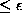
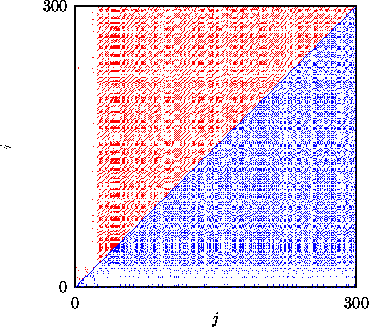

Recurrence plots are a useful tool to identify structure in a data set in a
time resolved way qualitatively. This can be intermittency (which one detects
also by direct inspection), the temporary vicinity of a chaotic trajectory to
an unstable periodic orbit, or non-stationarity. They were introduced
in [37] and investigated in much detail in [38],
where you find many hints on how to interprete the results. Our routine
recurr simply scans the time series and marks each pair of time indices
(i,j) with a black dot, whose corresponding pair of delay vectors has
distance . Thus in the (i,j)-plane, black dots indicate
closeness. In an ergodic situation, the dots should cover the plane uniformly
on average, whereas non-stationarity expresses itself by an overall tendency
of the dots to be close to the diagonal. Of course, a return to a dynamical
situation the system was in before becomes evident by a black region far away
from the diagonal. In Fig.  , a recurrence plot is used
to detect transient behavior at the beginning of a longer recording.
, a recurrence plot is used
to detect transient behavior at the beginning of a longer recording.

Figure: Recurrence plot for Poincaré section data from a vibrating string experiment [39]. Above the diagonal an embedding in two dimensions was used while below the diagonal, scalar time series values were compared. In both cases the lighter shaded region at the beginning of the recording indicates that these data are dynamically distinct from the rest. In this particular case this was due to adjustments in the measurement apparatus.
For the purpose of stationary testing, the recurrence plot is not particularly
sensitive to the choice of embedding. The contrast of the resulting images can
be selected by the distance  and the percentage of dots that should
be actually plotted. Various software involving the color rendering and
quantification of recurrence plots is offered in DOS executable form by
Webber [40]. The interpretation of the often intriguing patterns
beyond the detection and study of non-stationarity is still an open question.
For suggestions for the study of nonstationary signals see [3] and
references given there.
and the percentage of dots that should
be actually plotted. Various software involving the color rendering and
quantification of recurrence plots is offered in DOS executable form by
Webber [40]. The interpretation of the often intriguing patterns
beyond the detection and study of non-stationarity is still an open question.
For suggestions for the study of nonstationary signals see [3] and
references given there.